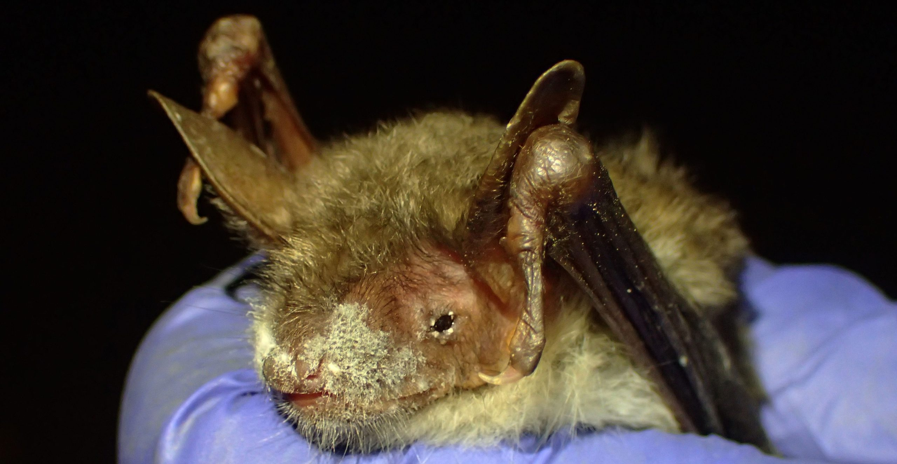
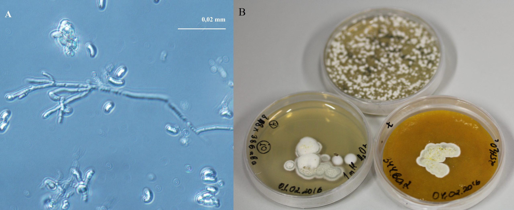
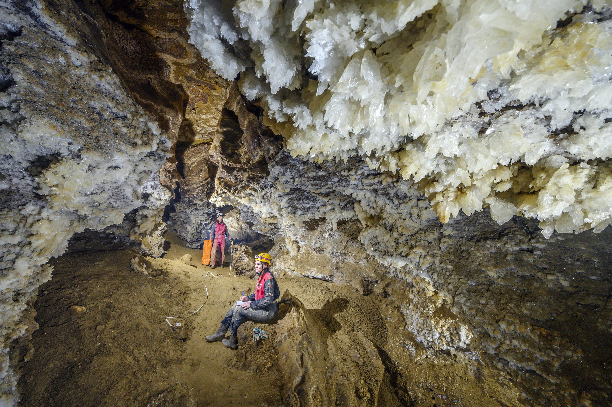
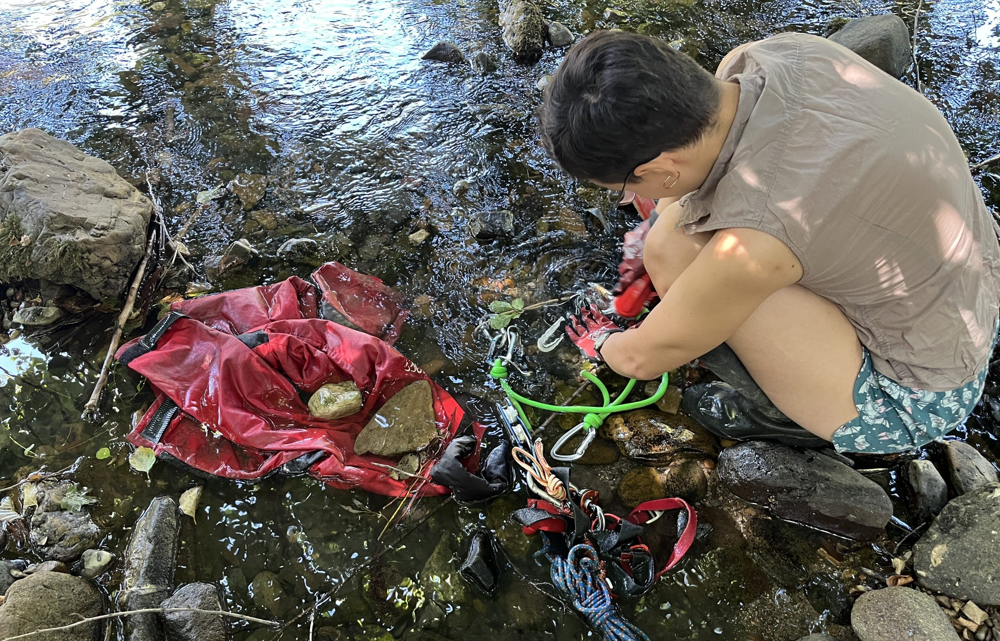
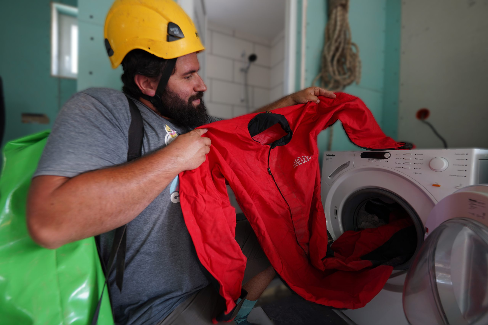
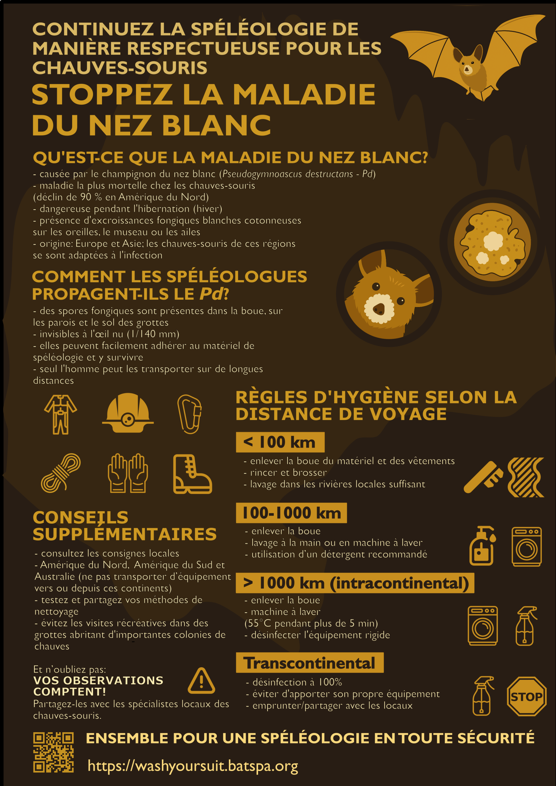

Maladie du nez blanc
Guide de spéléologie respectueuse des chauves-souris en Europe et en Asie.

Qu’est-ce que la maladie du nez blanc ?
La maladie du nez blanc (MNB ; associée au syndrome du nez blanc/SNB) est la maladie la plus mortelle connue chez les chauves-souris cavernicoles hibernantes, causée par le champignon du nez blanc. Jusqu’à présent, elle a fait plusieurs millions de victimes, provoquant un déclin de plus de 90 % des colonies des espèces de chauves-souris les plus touchées en Amérique du Nord. Les chauves-souris jouant un rôle essentiel dans la régulation naturelle des populations d’insectes nuisibles, leur diminution a donc de graves répercussions sur les écosystèmes sauvages et agricoles, ainsi que sur la santé humaine. De plus, elles constituent une espèce parapluie dans les écosystèmes cavernicoles, participant aux cycles nutritifs et contribuant au maintien de la biodiversité et des formations rocheuses. Par conséquent, protéger les chauves-souris revient souvent à protéger les grottes et tous leurs habitants.
Comment reconnaître la MNB ?
La MNB n’affecte que les chauves-souris pendant l’hibernation, lorsque leur température corporelle est basse, et ne peut affecter ni les humains ni les autres animaux. Elle se présente sous la forme d’une excroissance fongique blanche, semblable à du coton, sur les oreilles, le museau ou les ailes des chauves-souris, généralement à la fin de l’hibernation/à la fin de l’hiver (Figure 1). Aucun champignon connu en dehors de l’Amérique du Nord ne présente un aspect similaire à l’œil nu ; par conséquent, l’observation visuelle de chauves-souris vivantes est généralement suffisante pour diagnostiquer la MNB. En général, plus la quantité de champignons visible est importante, plus l’infection est grave. Il ne faut toutefois pas la confondre avec la prolifération de champignons saprophytes (se nourrissant de matière organique morte) qui recouvrent entièrement le corps des chauves-souris mortes.

Quelles sont les causes de la MNB ?
La MNB est causée par le champignon cavernicole aimant le froid Pseudogymnoascus destructans, également appelé Pd ou champignon du nez blanc (Figure 2). Il s’agit en réalité d’un complexe de deux espèces, mais nous venons de découvrir la seconde et nous ne lui avons pas encore attribué de nom scientifique distinct. Nous utilisons plutôt les noms Pd1 et Pd2. Pd1 et Pd2 sont tous deux présents en Europe et en Asie, mais ils ne provoquent aucune mortalité massive. Cela s’explique par leur présence sur ces continents depuis des milliers d’années, ce qui a permis aux chauves-souris de s’adapter à l’infection. En revanche, Pd1 n’a été introduit en Amérique du Nord que récemment (il y a environ 20 à 30 ans), où il a rencontré des espèces de chauves-souris naïves sans exposition évolutive préalable à l’agent pathogène. Ce phénomène, où des agents pathogènes envahissent de nouvelles régions où ils n’étaient pas présents auparavant, est appelé « pollution pathogène » et est souvent dû à l’activité humaine.

Pourquoi le comportement des spéléologues est-il important ?
Les spores de Pd, invisibles à l’œil nu (les spores mesurent 1/140e de millimètre), se trouvent dans différents substrats de grottes (par exemple, dans la boue du sol de la grotte, sur les parois) avec des centaines d’autres espèces microbiennes (champignons, bactéries, etc.). Tous ces organismes peuvent facilement adhérer à l’équipement de spéléologie (seuls ou collés à la boue), ce que nos expériences ont prouvé en isolant des Pd vivants depuis des combinaisons de spéléologie après avoir visité des grottes. Nous avons également démontré que le Pd pouvait survivre sur le matériel de spéléologie pendant au moins 25 jours à température ambiante. Cela signifie que les spéléologues peuvent transporter involontairement le Pd1 ou Pd2 d’une grotte à l’autre. Nos données génétiques montrent que cela s’est déjà produit avec Pd1, qui a été transporté sans être remarqué de la région de Podillia dans l’ouest de l’Ukraine, où se trouvent les plus longues grottes de gypse du monde (Figure 3), jusqu’à une grotte de l’État de New York aux États-Unis. En revanche, bien que certaines espèces de chauves-souris puissent migrer sur de grandes distances, de nombreuses recherches ont montré qu’elles ne sont pas efficaces pour transporter le Pd loin de leurs gîtes.

Quelle est la solution pour prévenir la MNB ?
Heureusement, une bonne planification des expéditions et une hygiène rigoureuse permettent de réduire considérablement la propagation de Pd. Nous présentons ici des consignes d’hygiène spécifiques à suivre en Europe ou en Asie, selon la distance parcourue.
Distances inférieures à 100 km ou exploration spéléologique au sein d’une même région au cours d’une seule expédition – faible risque pour la conservation
À cette distance, les chauves-souris peuvent transporter le Pd. Par conséquent, il suffit d’enlever la boue des combinaisons de spéléologie et autres équipements avec de l’eau et une brosse, car notre objectif n’est pas nécessairement d’éliminer tout le Pd présent sur nos vêtements, mais d’en limiter la propagation. Ainsi, l’habitude des spéléologues de laver leur équipement dans les rivières locales est acceptable (Figure 4).

Distances comprises entre 100 et 1000 km ou déplacements entre différentes régions spéléologiques d’un même continent – risque de conservation modéré
À cette distance, les humains sont déjà un vecteur de Pd plus efficace que les chauves-souris. Bien que les espèces Pd1 et Pd2 soient présentes partout en Europe et dans une grande partie de l’Asie, le mélange de champignons à nez blanc génétiquement différents peut potentiellement créer des variants pathogènes plus dangereux. Ce phénomène s’est déjà produit avec le champignon chytride qui décime les amphibiens à travers le monde. Par conséquent, nous recommandons de laver votre matériel avec le plus grand soin, soit à la main, soit en machine après avoir enlevé la boue, de préférence avec un détergent (Figure 5). Nos expériences en laboratoire ont montré qu’un brossage minutieux à l’eau élimine environ 95 % des spores de Pd initialement présentes sur les éléments en cordura, et qu’un lavage en machine avec du détergent élimine plus de 99,5 % des spores de Pd. Sur des morceaux de corde en nylon, le brossage à l’eau élimine environ 85 % du Pd, et le lavage en machine avec un détergent spécialisé, sans danger pour l’équipement, peut éliminer jusqu’à 98 % du Pd. Si vous vous rendez dans un autre club de spéléologie situé dans une région différente, il est préférable d’utiliser leur matériel local.

Distances supérieures à 1000 km à l’intérieur d’un même continent – risque élevé pour la conservation
Ici, les risques d’échanges génétiques entre différentes souches fongiques sont plus élevés ; par conséquent, vous devez éliminer tout Pd de votre équipement. La meilleure pratique consiste à laver sa combinaison de spéléologie à des températures supérieures à 55 °C pendant plus de 5 minutes (il est prouvé que cela tue le Pd) et à désinfecter le matériel rigide comme votre appareil photo ou caméra avec de l’alcool ou d’autres agents appropriés, bien sûr après avoir enlevé toute la boue. N’emportez aucun équipement personnel, comme les cordes, qui ne peut pas être désinfecté en toute sécurité, et empruntez plutôt du matériel local. En quittant le lieu de l’expédition, veillez à placer tout le matériel sale dans des sacs dédiés et propres, afin qu’il ne contamine pas votre matériel propre ou votre voiture. Si votre voiture est souillée, vous devriez également la laver entre les expéditions – cela contribuera à prévenir non seulement la propagation du Pd, mais aussi celle d’autres microbes susceptibles de vivre dans le sol. Vous trouverez des protocoles de décontamination plus détaillés et des listes mises à jour d’agents de désinfection testés contre Pd à cette adresse : https://www.whitenosesyndrome.org/static-page/decontamination-information.
Distances transcontinentales – risque de conservation très élevé
L’introduction de Pd1 ou Pd2 dans de nouveaux endroits où ils ne sont pas présents actuellement peut déclencher une deuxième vague d’épidémies de MNB qui ne pourra pas être arrêtée. Par conséquent, tout équipement transporté d’un continent à l’autre doit être désinfecté à 100 %, et vos chaussures et vêtements doivent être propres. N’emportez rien qui puisse contenir la moindre trace de substrat de grotte.
Autres continents
Lors de vos explorations spéléologiques en Amérique du Nord, vous devez suivre les directives locales disponibles ici : https://www.whitenosesyndrome.org/static-page/decontamination-information, qui sont basées sur la présence/absence de Pd plutôt que sur la distance. En bref, dans une zone où les chauves-souris meurent massivement de la MNB, chaque sortie spéléologique représente un risque élevé pour la conservation, et le matériel de spéléologie doit être systématiquement désinfecté entre chaque grotte. Le déplacement de matériel entre des zones fortement contaminées par le Pd et des zones moins contaminées constitue un risque très élevé pour la conservation et doit être évité. Une carte régulièrement mise à jour de ces zones est disponible sur le site web mentionné ci-dessus, ainsi qu’une liste des produits désinfectants locaux testés contre le Pd. La meilleure pratique d’hygiène reste le lavage à une température supérieure à 55 °C pendant plus de 5 minutes. Certaines personnes, principalement des chercheurs, utilisent également des combinaisons spéléologiques à usage unique, mais celles-ci sont rarement pratiques pour la spéléologie d’exploration. N’apportez et ne ramenez sous aucun prétexte du matériel spéléologique sur le continent.
En Australie et en Amérique du Sud, le Pd n’est pas encore présent. Cependant, des recherches indiquent qu’une mortalité des chauves-souris due à la MNB est probable, car de nombreuses grottes offrent des conditions propices au développement du Pd et les espèces de chauves-souris ne sont pas adaptées à ce champignon. Par conséquent, le matériel de spéléologie ne doit pas être transporté vers ou depuis ces continents. À l’intérieur de chaque continent, vous pouvez suivre les règles d’hygiène en fonction de la distance décrites précédemment, afin de prévenir la contamination par des agents pathogènes et d’autres espèces microbiennes. Vous trouverez plus d’informations ici : https://wildlifehealthaustralia.com.au (pour l’Australie).
Quelle aide supplémentaire pouvez-vous apporter ?
Ces consignes d’hygiène sont basées sur les connaissances scientifiques actuelles les plus récentes, mais il est toujours possible de les améliorer. N’hésitez pas à partager vos idées pour nettoyer le matériel de spéléologie de manière simple et respectueuse de l’environnement. Après la visite d’une grotte où le Pd est particulièrement abondant, ou avant la visite d’une grotte nouvellement découverte, d’une grotte sans entrée naturelle ou particulièrement sensible pour d’autres raisons, il pourrait être prudent d’opter pour une catégorie d’hygiène supérieure. N’oubliez pas de vous renseigner sur la législation locale et les restrictions d’accès aux grottes. Pour les grottes abritant de grandes colonies de chauves-souris, évitez les visites à des fins récréatives pendant leur période de reproduction ou d’hibernation.
Enfin, les spécialistes des chauves-souris sont peu nombreux, mais les spéléologues sont légion – et vos observations sont précieuses. Vous pouvez contacter les experts locaux ou notre équipe pour signaler le nombre de chauves-souris et tout signe de maladie ou de mortalité anormale. Lors de votre signalement, veuillez indiquer le nom de la grotte, son emplacement exact, la date, le nombre de chauves-souris vivantes et mortes, ainsi que des photos. Signalez tout comportement inhabituel des chauves-souris, la présence de MNB, ou toute activité humaine récente. N’oubliez pas d’ajouter vos coordonnées pour un suivi.

Remerciements
Nous remercions tous les spéléologues qui nous ont aidés en nous prodiguant des conseils ou en remplissant et en distribuant nos questionnaires sur les pratiques d’hygiène spéléologique.
Littérature scientifique citée
- Cheng TL, Reichard JD, Coleman JTH, Weller TJ, Thogmartin WE, Reichert BE, Bennett AB, Broders HG, Campbell J, Etchison K, Feller DJ, Geboy R, Hemberger T, Herzog C, Hicks AC, Houghton S, Humber J, Kath JA, King RA, Loeb SC, Massé A, Morris KM, Niederriter H, Nordquist G, Perry RW, Reynolds RJ, Sasse DB, Scafini MR, Stark RC, Stihler CW, Thomas SC, Turner GG, Webb S, Westrich BJ, Frick WF (2021) The scope and severity of white-nose syndrome on hibernating bats in North America. Conservation Biology 35: 1586–1597. https://doi.org/10.1111/cobi.13739
- Fischer NM, Dumville I, Nabholz B, Zhelyazkova V, Stecker RM, Blomberg AS, Dool SE, Fritze M, Tilak MK, Bashta AT, Chenal C, Fiston-Lavier AS, Puechmaille SJ (2025) Two distinct host-specialized fungal species cause white-nose disease in bats. Nature. https://doi.org/10.1038/s41586-025-09060-5
- Fritze M, Puechmaille SJ, Fickel J, Czirják GA, Voigt CC (2021) A Rapid, in-Situ Minimally-Invasive Technique to Assess Infections with Pseudogymnoascus destructans in Bats. Acta Chiropterologica 23: 259–270. https://doi.org/10.3161/15081109ACC2021.23.1.022
- Gargas A, Trest MT, Christensen M, Volk TJ, Blehert DS (2009) Geomyces destructans sp. nov. associated with bat white-nose syndrome. Mycotaxon 108: 147–154. https://doi.org/10.5248/108.147
- Leopardi S, Blake D, Puechmaille SJ (2015) White-nose syndrome fungus introduced from Europe to North America. Current Biology 25: R217–R219. https://doi.org/10.1016/j.cub.2015.01.047
- Lorch JM, Meteyer CU, Behr MJ, Boyles JG, Cryan PM, Hicks AC, Ballmann AE, Coleman JTH, Redell DN, Reeder DM, Blehert DS (2011) Geomyces destructans causes white-nose syndrome. Nature 480: 376–378. https://doi.org/10.1038/nature10590
- Puechmaille SJ, Wibbelt G, Korn V, Fuller H, Forget F, Mühldorfer K, Kurth A, Bogdanowicz W, Borel C, Bosch T, Cherezy T, Drebet M, Görföl T, Haarsma AJ, Herhaus F, Hallart G, Hammer M, Jungmann C, Le Bris Y, Lutsar L, Masing M, Mulkens B, Passior K, Starrach M, Wojtaszewski A, Zöphel U, Teeling EC (2011) Pan-European distribution of white-nose syndrome fungus (Geomyces destructans) not associated with mass mortality. PLoS ONE 6. https://doi.org/10.1371/journal.pone.0019167
- Zhelyazkova V, Hubancheva A, Radoslavov G, Toshkova N, Puechmaille SJ (2020) Did you wash your caving suit? Cavers’ role in the potential spread of pseudogymnoascus destructans, the causative agent of white-nose disease. International Journal of Speleology 49: 145–155. https://doi.org/10.5038/1827-806X.49.2.2326
- Zhelyazkova V, Tičar J, Deleva S, Ivanov A, Toshkova N, Puechmaille S (2025) Cavers’ knowledge of biosecurity and its influence on the prevention of white-nose disease. Subterranean Biology 52: 45–68. https://doi.org/10.3897/subtbiol.52.140425
- Zukal J, Bandouchova H, Brichta J, Cmokova A, Jaron KS, Kolarik M, Kovacova V, Kubátová A, Nováková A, Orlov O, Pikula J, Presetnik P, Šuba J, Zahradníková Jr. A, Martínková N (2016) White-nose syndrome without borders: Pseudogymnoascus destructans infection tolerated in Europe and Palearctic Asia but not in North America. Scientific Reports 6: 19829. https://doi.org/10.1038/srep19829